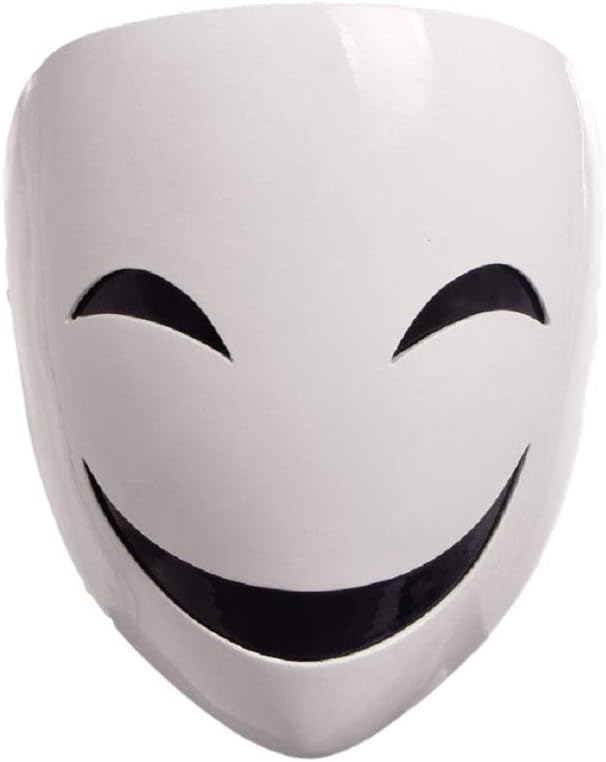
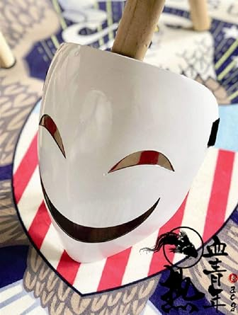

Hello today we are gonna be talking about Smiler the smile. We don't know his idenity or his
orgins but he comes out at night wearing a creepy mask with a big smile on it. He robs
people murders people and more he is a level 5 crimal on the crimal chart. He teams up with The Doc who is a level 4 criminal who is a doctor in the afternoon but
at night a dangerous person. His name is Robert J. Kennedy son of John F. Kennedy who recently died.
He works with Smiler sometimes and they are the most dangerous duo there. The Doc wears a doctors
rob with a surgion mask. Please aviod them and stay in at night They will kill,rob, steal etc....
Oh and your not safe in homes we have footage of him burning down houses and killing lots of people Please
stay safe in CharletteVille and please do not take their drugs they have an addiction thing
like niction but worse once you take a lot pray because it has posion. Please stay safe.
The criminal chart
level 1:A crimal who commited a small crime
Level 2: A crimal who did multipale bad crimes
Level 3: a person who kills and robs people
Level 4 just a horribale person
level 5: only smiler

The smilers mask
Made by the prisoners inc december of 1963
Smilers life
Hello I am Smiler the criminal, what ya'll call me listen I may be bad but I won't kill unless
for a reason. The prisoners inc is lying about me and Doc I know we are bad but they are just as bad
listen we don't sell drugs they do. We don't kill random people they do. So listen to my backstory
about me. When I was a little kid my family got divorced I was not crazy I was good at school
and I had friends but, my dad has anger issues so I got anger issues I was young I will not give up my
name but I had issues then came highschool I started doing bad stuff then college I went to a good school
but still did bad things my mom did not care about me she cared for my sister who ended up being
succsesful now I started this life after college when I robbed people and stole stuff then I got to this.
listen I should be a level 3 criminal with The Doc I know but prisoners inc held me in prison when I was
18 and I got abused by them they are the real criminals they are the ones who sell the drugs.
by Smiler
Made by Smiler The Smile in janury of 1964
DocsLife
Hello I am the doc This is my story now listen what Smiler said is true the prisoners inc is bad worse
than us. My life started with a good family we had a good life. When I was 10 years old I wanted
to be a doctor but people made fun of me. So when I was 11 I moved to CharletteVille. Then I was 15 in
college I had good grades and I was a doctor with a good life until the death happened my brother
got shot and died then I went crazy. Doctor by day crimal by night. but I am not that bad of a a person.
Made by The Doc janury 1964
The smiles gang
Hello today we are gonna talk about the smiles gang. The smiles gang is the most dangerous gang The
wear masks Smiler wears.

They will kill you if you say something bad about them or abuse you. They are dangerous please
stay away from them at night they will hurt you. Do not join the smiler gang they sell you a drug
that controls your mind and you will be forced by them and the drug under your will please stay away from them.
New news they were caught burning down buildings and murdering people please stay safe.
Made by prisoners inc february 1964
Smiler Is Bad
Omg Smiler is bad he tryed killing me he is a horribale person please do not trust him or the gang.
They tried to sell me drugs to join the gang please do not trust them omg the are burning my house
down.Do not trust any of them please they are trying to kill me and sell me the drug please help.
mask I saw
??/? made in ?? 1964
I saw Smiler
I was walking 0ne day when I saw the mask prisoners inc talks about The Smiler. He actually was
not that bad of a person he did not try to kill me or sell me anything and his gang was nice
I thought he was bad because of the prisoners inc but no he was nice. Prisoners inc is lying
we need ya'll to know that prisoners inc is lying please stop listening to them.
Can't share name made in february 1964
End of Smiler And Doc
Hello again we will be talking about the smiler and you all are safe now because we locked him up and the doc
and most of the smilers members ya'll are totally safe now.
This is all, I will make sequels and prequels and all of this is based on real
life storys, Just Kidding none of this is real and it is make believe thank you all for reading this work and a tribute to john f kennedy death